Vaux-Le-Pénil 2008, fête du CVCF

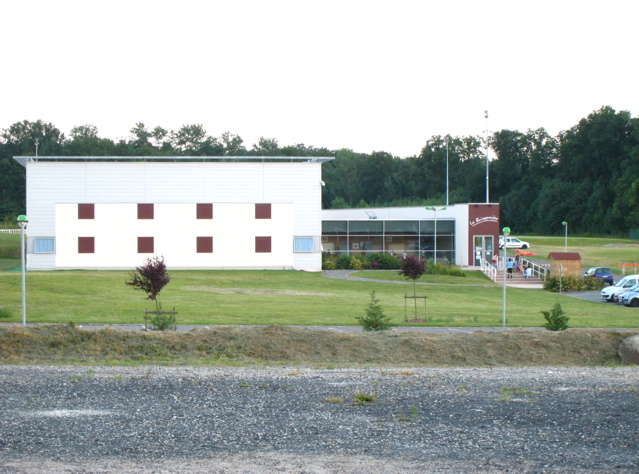
C'est le 31ème anniversaire du CVCF. Eric Stempell nous a concocté une belle fête à Vaux-Le-Pénil, qui touche Melun... Il y a une grande salle-gymnase avec toutes les commodités, cuisines, etc.

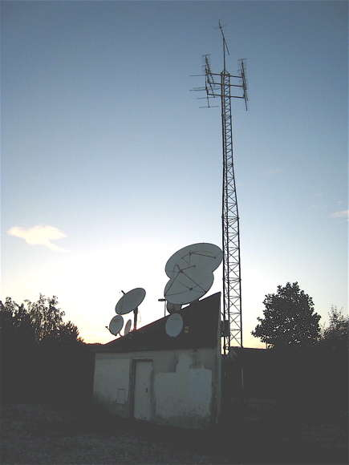
Au coin du terrain un centre de réception d'un peu tout, pour le lotissement voisin, mais le terrain est tellement grand que nous ne serons pas gênés....

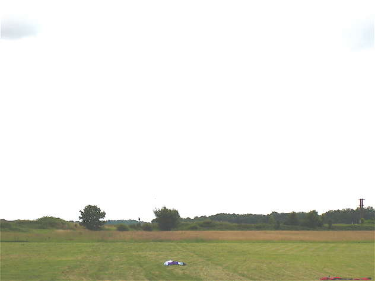
Le terrain, il est vraiment immense... Et tout au loin, encore des cerfs-volants, semble-t-il ! On en reparlera...

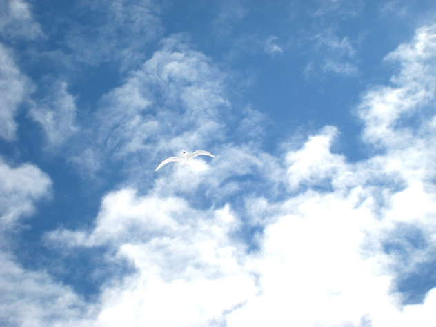
Ce soir, pas trop de vent, je fais voler un peu mon goéland dans l'air calme...

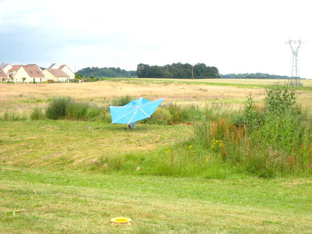
Samedi matin, les cervolistes arrivent en nombre avec des cerfs-volants variés comme ce Jessica de 4 m à pattes !

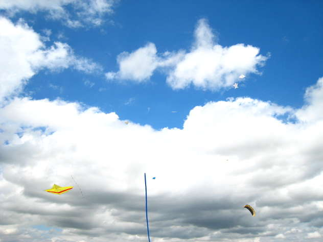
Il commence à y avoir du monde en l'air, bien que le vent soit limité et un peu turbulent derrière la forêt... et le gymnase !

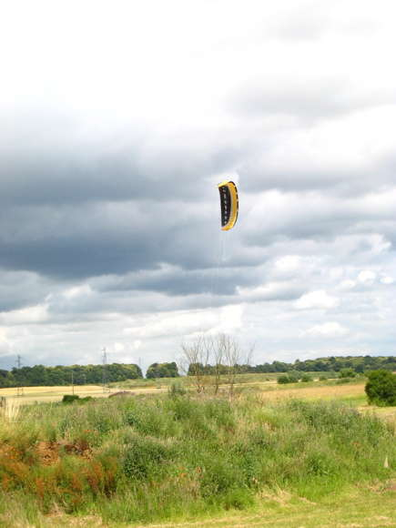
Le Team Impossible avec Dédé, Julie et Renaud est venu, ils n'habitent pas loin. Renaud se fait les bras avec sa voile de traction !

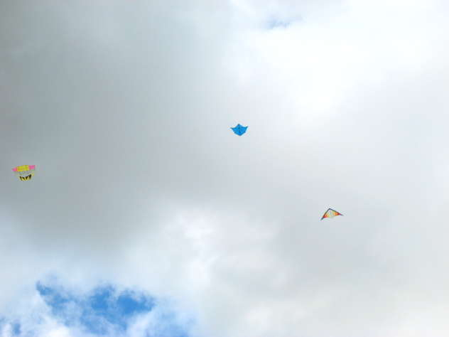
Et de gros cerfs-volants nous survolent : le Jessica de 4 m, le delta de 6 m de François et un grand Dopéro !

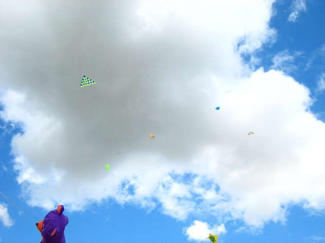
Mais tout finit par monter, sauf le nounours de Patrick, mais il a une excuse, il est attaché à un mât !

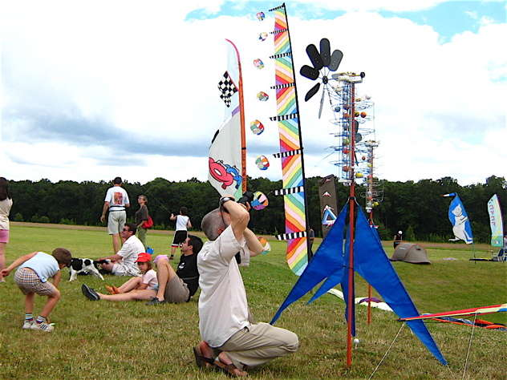
Les moulins à balles de Joël attirent toujours beaucoup de monde... Notez aussi la belle bannière derrière avec une trame colorée et variée, et des petits bols de taille décroissante.

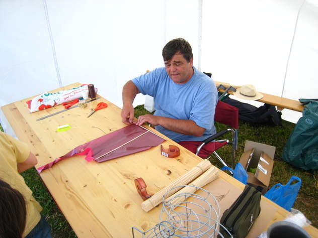
Eric va aussi animer un atelier qu'il a soigneusement préparé, sur la base d'un CV très simple, le Tau...

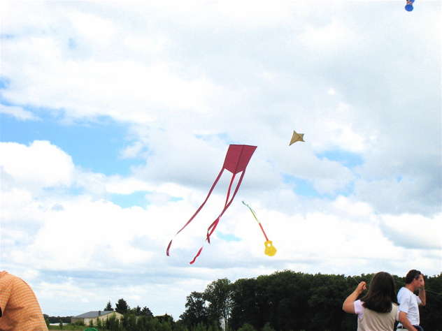
Et voilà, ça vole, avec 3 queues pour stabiliser le total... Au second plan, une guitare dont Eric devrait s'inspirer pour suggérer un modèle pour Dieppe...

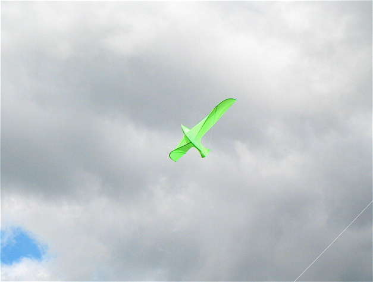
Avec des scions de canne à pêche et une inspiration Albatros très lointaine, Eric a créé ces délicats oiseaux qui volent très bien !

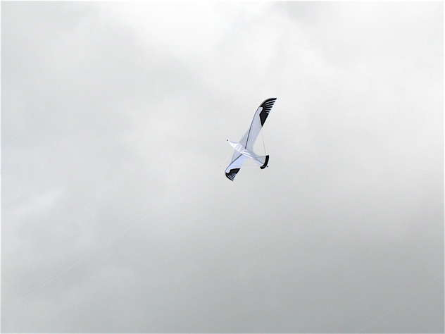
J'aime bien la déco de celui-ci !

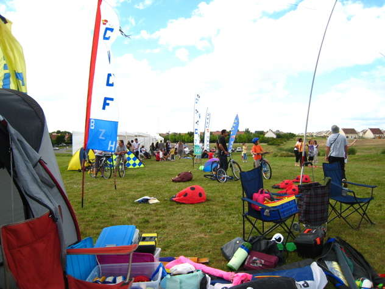
Pendant ce temps, au sol, c'est le grand déballage de matériel avec montage de tentes, de fauteuils, de coccinelles, de bannières etc !

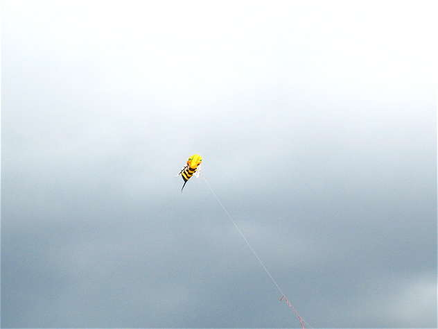
Dédé, le leader des Impossible, a lancé cette abeille... entièrement gonflable !

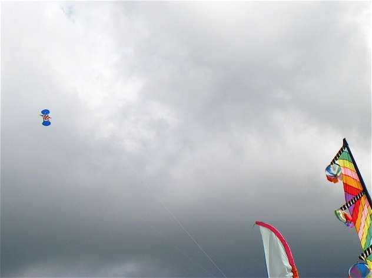
Loïk Lamalle est là, avec ses classiques comme le Tambourin, mais aussi des créations dans son style à lui : un nouveau tambourin, des étagères, etc. !

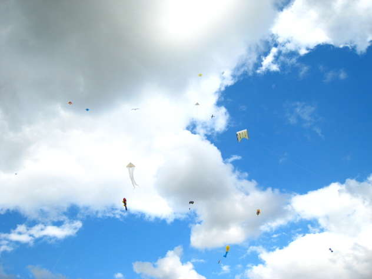
Là-haut, François a monté le gros flow-form de Beauce, au-dessus de la sirène de Dédé.

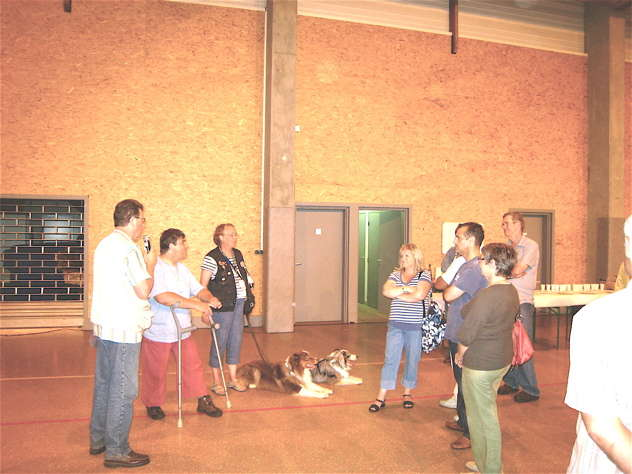
Le samedi soir, nous allons dîner dans la salle. Auparavant, Le Président fait un petit discours pour les autorités municipales qui semblent avoir bien apprécié notre prestation !

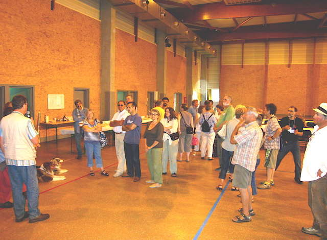
Les édiles écoutent avec plus d'attention que les cervolistes, qui se dissipent !

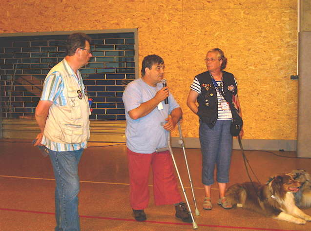
Eric, délégué régional IdF du CVCF mais aussi président du club de Vaux-Le-Pénil y va aussi de son petit speech, bien ciblé car il connaît tout le monde...

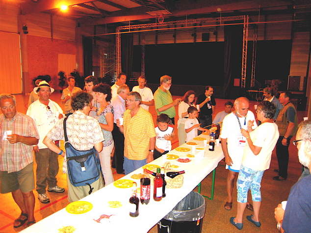
Evidemment, il faut fêter ça et un petit verre délie les langues...

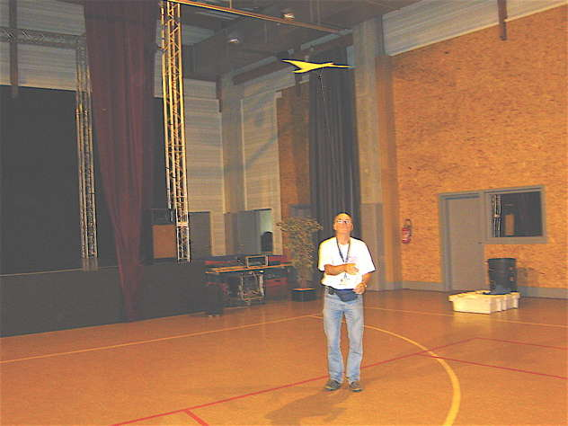
Je fais un peu de cerf-volant indoor avec Bambou Bird, pour montrer à ceux qui ne connaissent pas... Je regretterai de n'avoir pas sorti aussi le Harfang pour montrer que l'équation "Indoor = micro-cerfs-volants" est fausse... Mais Gilles va m'aider...

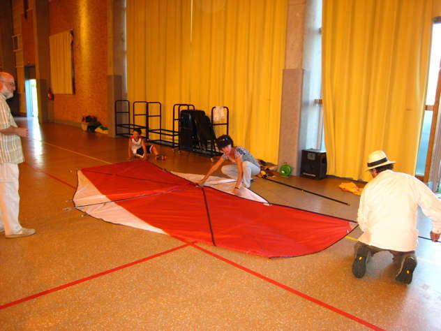
Pour m'aider dans ma démonstration, Gilles et Catherine montent pour un premier vol leur Jessica de 6 m ultra-léger ! Ils s'attachent à le faire avec une précision maximale ! D'ailleurs Sylvien surveille !

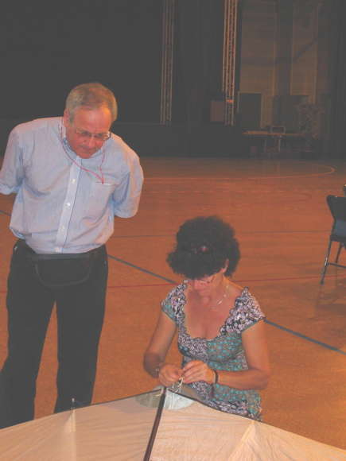
Catherine règle la tension longitudinale sous l'oeil d'un connaisseur attentif !

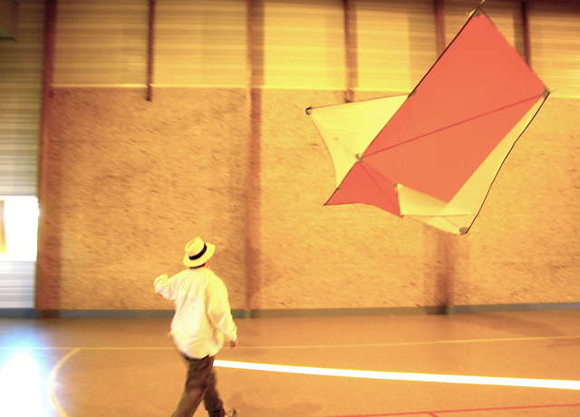
Je fais un petit tour de salle avec, pour que G et C le voient en vol (très bon), modifient un peu le réglage des tensions avant, puis Gilles le conduira lui-même. Il n'y a même pas besoin de marcher vite (4 km/h ?)...

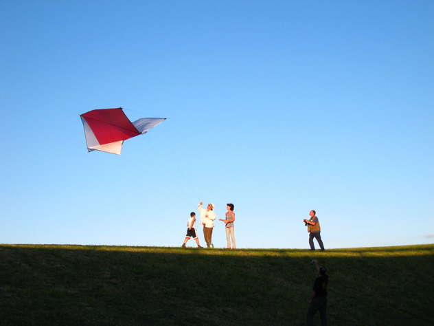
Le vent est calme dehors. Les constructeurs sortent la bête pour un vol de rêve dans le soleil couchant...

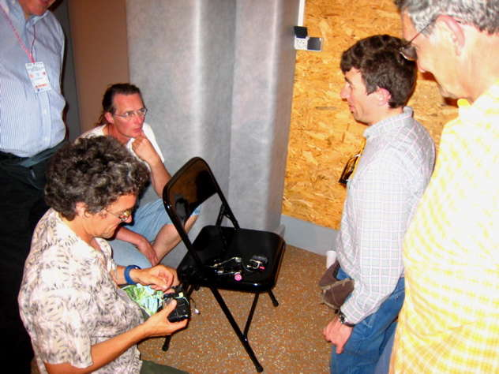
Dans la salle, un micro-séminaire des aérophotographes, improvisé sur une chaise pour se montrer les créations et équipements...

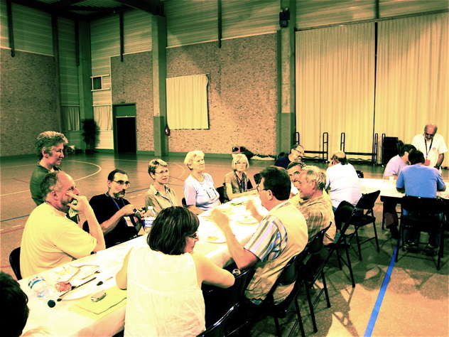
A table, les dîneurs jouent les prolongations !

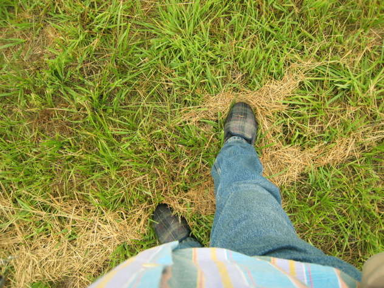
Nous serons quelques-uns à dormir dans le gymnase pour gardienner le bazar. Dimanche matin, François n'y tient plus et va explorer les cerfs-volants lointains en Charentaises dans l'herbe...

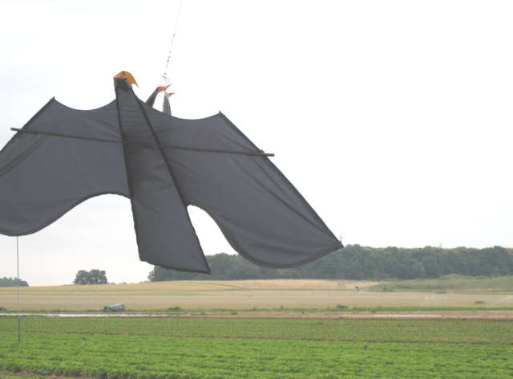
Les rapaces sont un peu mous ce matin, mais ils ne tomberont pas par terre, ils sont suspendus à des potences ! La construction en est assez simple, sur une base genre delta...

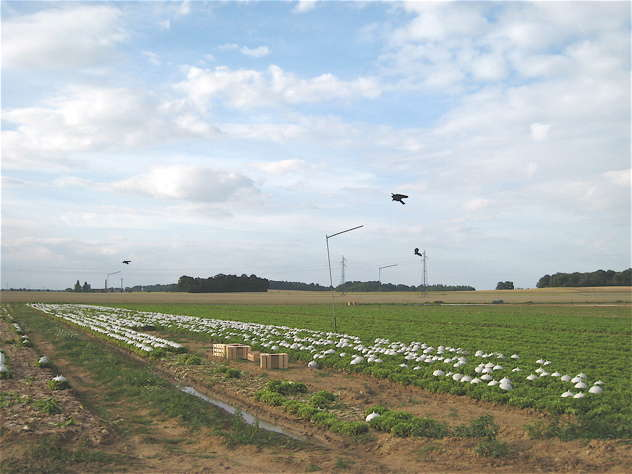
Ils sont en fait destinés à protéger écologiquement les récoltes en effrayant les oiseaux qui viennent picorer les salades, pourtant couvertes par de mignons petits chapeaux...

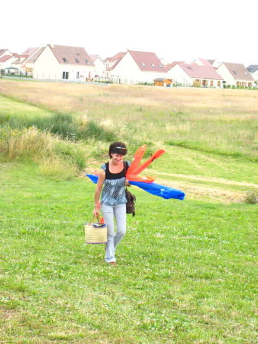
Les renforts arrivent, Catherine monte la côte avec plein de Jessicas. Ils ont souffert hier soir, car ils sont trop longs pour le coffre de la voiture. Alors Gilles a laissé le coffre ouvert. Mais il a oublié la barre à 1,80 m à la sortie qui a brisé la vitre, et claqué la porte sur les CVs ! Enfin, une seule barre cassée...

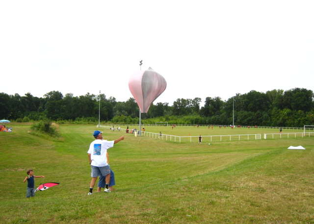
Emmanuel Duba profite du manque de vent pour faire voler son ballon solaire... difficilement : il n'est pas noir, et de plus Emmanuel l'a doté d'une petite nacelle avec... un chat, évidemment !

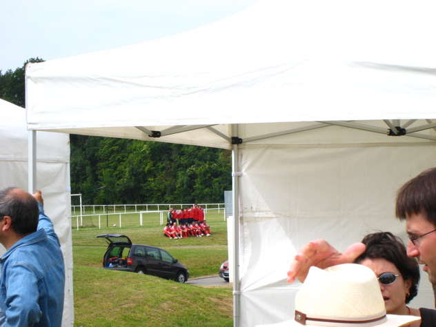
En face, les footballeux s'en donnent à coeur joie. Tellement que l'un d'eux fera un malaise et que les pompiers viendront le soigner... Mais ils poseront quand même pour la République (le journal !)...

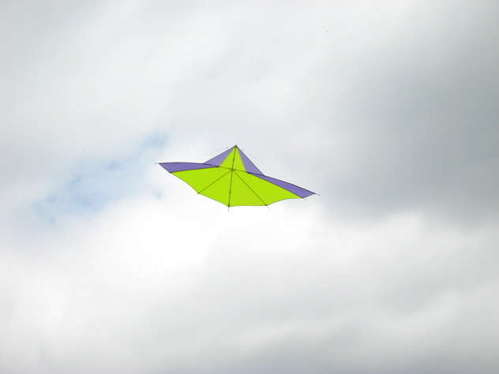
Pascal Pavel, l'ancien Délégué de la Région Centre et de l'Antenne de Beauce est arrivé avec toute sa smala : Cécile, 4 enfants, le chien, la tente, les jouets... Il a succombé aussi à la Jessicamania avec ce CV très bien tendu, contrairement à d'autres très mous...

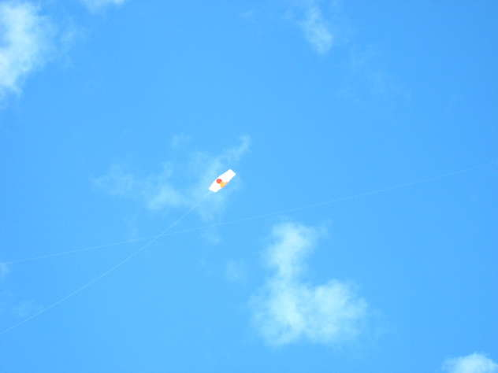
Daniel Crinier sort aussi ce Faga au beau décor, bien adapté au vent light !

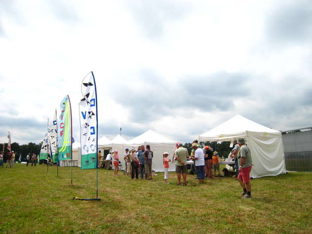
Le public se presse devant les 5 barnums qu'il a fallu monter hier matin, démonter le soir, remonter ce matin. Les cervolistes ont montré leur solidarité pour le coup (honte à ceux qui n'ont que regardé, j'ai les noms !). Heureusement, l'équipe municipale viendra démonter ce soir, ouf !

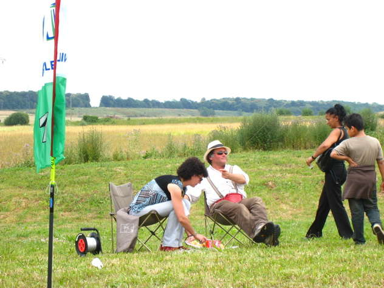
Bon, ben le Jessica 4 m vole à 300 m, Gilles prend la position du pêcheur à la ligne pour déjeuner !

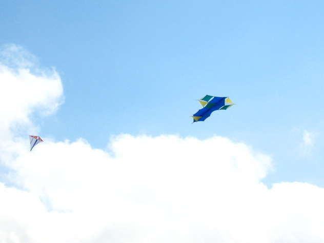
Un peu plus loin, un beau cellulaire genre Pelly-box, mais avec une structure centrale que je n'ai pas bien pu détailler...

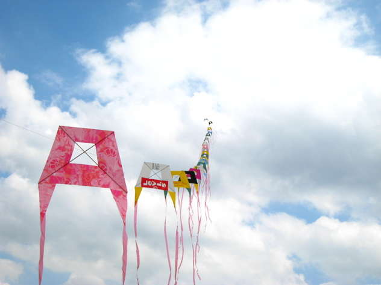
Georges a monté avec bien des efforts et des rentrées-sorties un joli train de cerfs-volants simples et originaux. En fait, ce sont des CVs mis bout à bout et il en démonte un de temps en temps pour le donner à un enfant !...

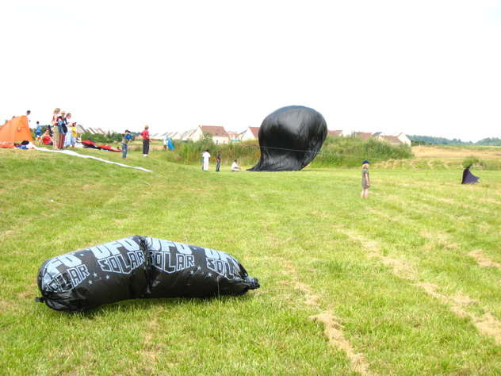
Toujours du plastique : pendant les (nombreuses) accalmies, les ballons solaires s'essaient. Il y en a 2, un petit commercial et un gros, réalisé par Daniel Crinier !

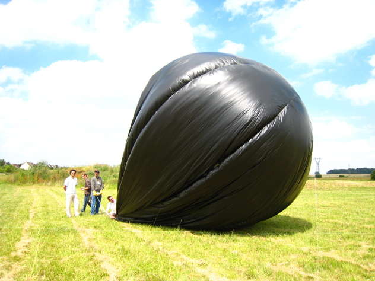
Ca y est, le ballon est gonflé ! Cela donne une idée de son volume !

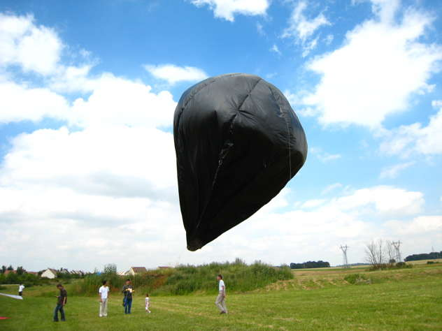
Et voilà ! Le ballon est en l'air, un peu déporté par le vent, mais il vole.

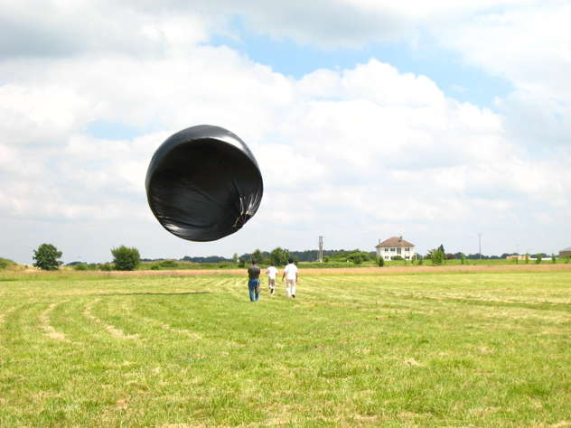
Le vent se renforce un peu, ça aplatit le ballon qui devient un bol et tire comme c'est pas possible sur les suspentes scotchées au plastique de 2 microns, pas une situation à prolonger...

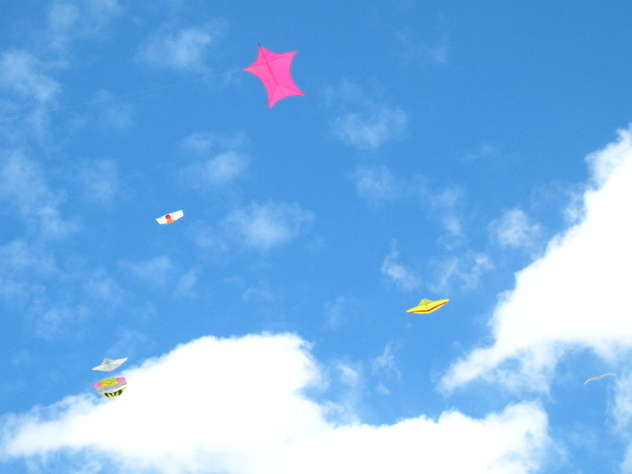
Pendant ce temps, les cerfs-volants continuent à cerf-voler ! En fait on vole surtout d'ascendance thermique en ascendance thermique, près de la verticale ! Entre les deux, tout s'écroule. Donc, il faut des cerfs-volants légers, et voler assez haut pour ne pas devoir se poser avant de repartir !

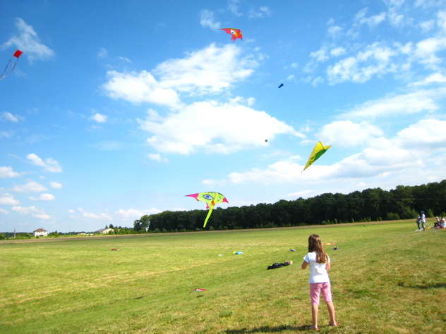
Petit vent, bon pour les Enervants, cerfs-volants souples qui ne supportent pas le vent fort, mais dont on voit une paire sortir aujourd'hui et bien se comporter...

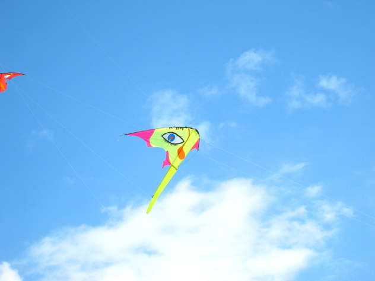
Celui-ci a une déco particulièrement marquante...

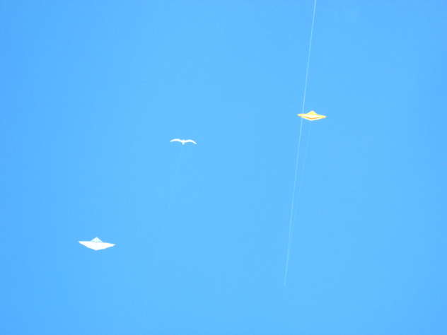
Vers la fin d'après-midi, les pompes solaires diminuent, et le vent devient plus régulier sinon plus fort. C'est presque dommage de partir, il ne reste plus que les pros dans un ciel dégagé où nous avons tous pris beaucoup de plaisir à emmêler et démêler nos lignes...
Vaux-Le-Pénil : La fête a été bonne, bien organisée dans l'ensemble, sans chichis superfétatoires ! Il est toujours agréable de connaître pratiquement tout le monde dans une rencontre, tous des cervolistes qui travaillent dans le même esprit et savent voler ensemble en sachant ce qu'ils font. Merci le CVCVP, et à une prochaine fois sur ce terrain splendide !